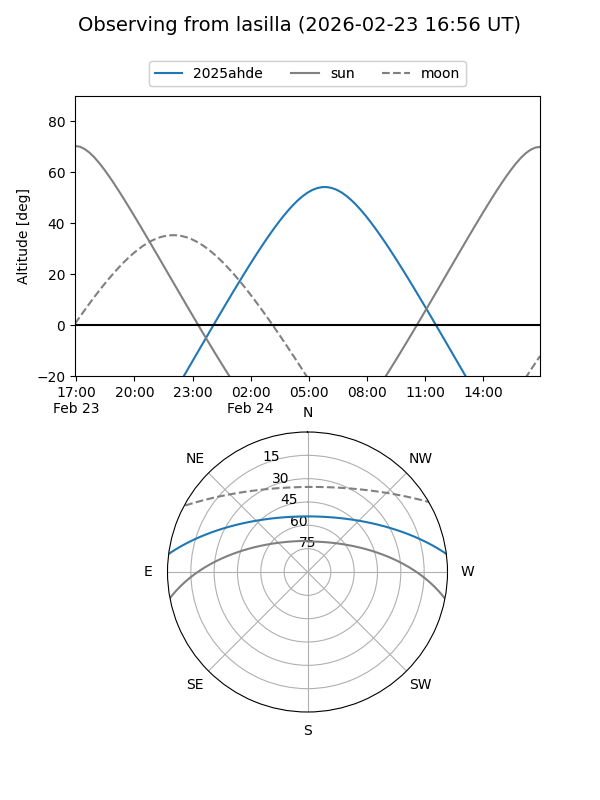
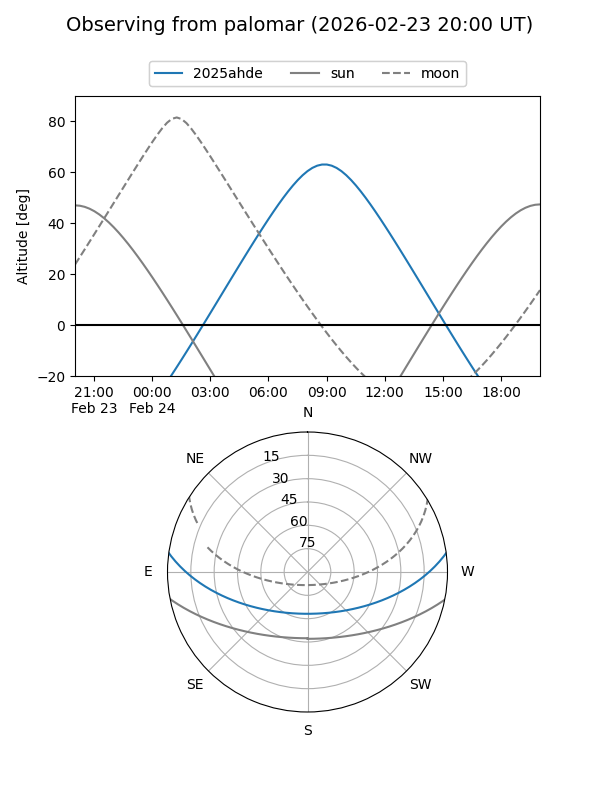
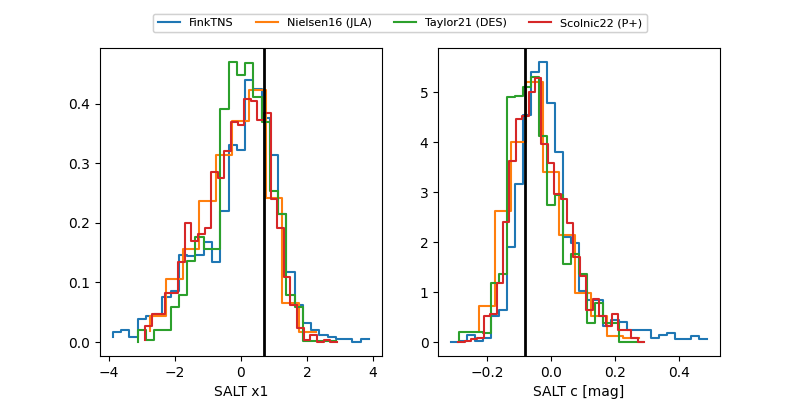

2025ahde
Target 2025ahde at 2025-12-29 10:06
Aliases and brokers:
FINK: fink-portal.org/ZTF25acibuse
Lasair: lasair-ztf.lsst.ac.uk/objects/ZTF25acibuse
ALeRCE: alerce.online/object/ZTF25acibuse
TNS: wis-tns.org/object/2025ahde
YSE: ziggy.ucolick.org/yse/transient_detail/2025ahde
alt names
ZTF25acibuse (ztf,fink_ztf)
2025ahde (tns,yse)
Coordinates:
equatorial (ra, dec) = 170.3948,+6.63416
equatorial (HMS+DMS) = 11:21:34.76,+06:38:02.98
galactic (l, b) = (252.6880,+60.41500)
Flags:
Photometry:
last ztfg=18.74, ztfr=19.14
2 ztfg, 3 ztfr detections
Lightcurve

Visibility


Additional plots
